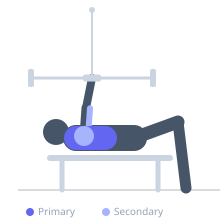
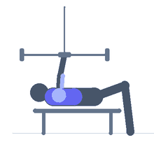

Exercise guide / Standing Cable Chest Press
Standing Cable Chest Press
The Standing Cable Chest Press is performed upright with cables set at chest height, pressing both handles forward simultaneously. The standing position engages the core and lower body for stability, while the cables provide continuous tension throughout the entire range of motion — unlike barbells or dumbbells that have varying torque curves. This makes it effective for hypertrophy and functional strength.
Primary muscles
pectoralis major sternal
pectoralis major clavicular
Secondary muscles
deltoid anterior
triceps lateral head
Stabilizers
transverse abdominis
internal oblique
pectoralis minor
Equipment
Cable Machine (Dual Pulley / Functional Trainer)
Optional
Cable Machine (High Pulley)


Starting position
- Set both cable pulleys to chest height. Stand in the center of the cable machine facing away from it. Hold one handle in each hand at chest level, stagger the feet for balance.
Setup
- Set both cable adjustable arms or dual-pulley machine to shoulder/chest height. Attach single handles. Stand in the center facing away, cables taut before pressing.
Steps
- Step 1: Hold handles at chest level with elbows slightly bent.
- Step 2: Press both hands forward until arms are fully extended, allowing a slight arc inward.
- Step 3: Return under control to starting position, feeling chest stretch.
- Step 4: Maintain a staggered foot stance for balance throughout.
Coaching cues
- Press forward and let the hands come together slightly at the front
- Squeeze the chest at peak extension
Breathing
- Exhale as you press forward. Inhale as you return.
Range of motion
- Full extension with slight internal rotation at peak; full return to chest level.
Tempo
- 3-1-2-0
Common mistakes
- Leaning too far forward, turning it into a core exercise
- Locking out elbows with a jerk rather than a controlled press
Safety
- Ensure cable clips are secure before pressing
- Do not load more than you can control in a standing position
Training
- hypertrophy: 10–15 reps
- endurance: 15–20 reps
- hypertrophy: 3–4 sets
- endurance: 2–3 sets
- Rest: {'hypertrophy': 75, 'endurance': 45}